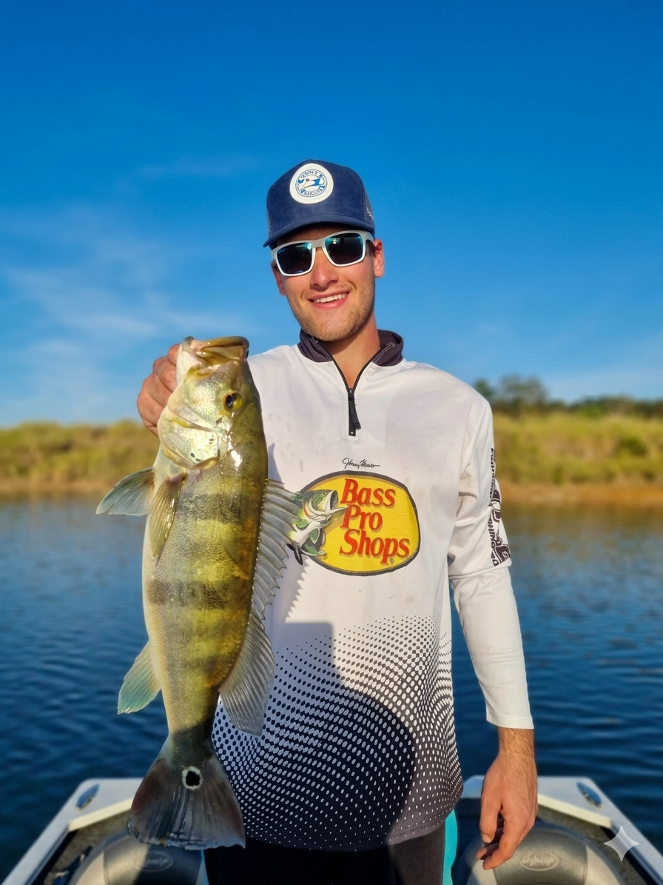

Acompanhe as melhores dicas, pescarias e equipamentos com a equipe Vale Pescados. Tudo o que você precisa saber para a sua próxima aventura.
Compartilhamos as melhores técnicas, iscas e horários para você não voltar com as mãos abanando. Seja para pesca em rios, lagos ou mar.
Analisamos varas, carretilhas, molinetes e iscas artificiais para ajudar você a escolher o melhor custo-benefício do mercado.
Promovemos a conscientização ambiental através do pesque e solte, garantindo a preservação das espécies para as futuras gerações.
Tem alguma dúvida, sugestão de pauta para o blog ou quer mostrar a foto daquele peixão que você pegou? Não precisa mandar e-mail, é só me chamar direto no WhatsApp!
(37) 99861-4304